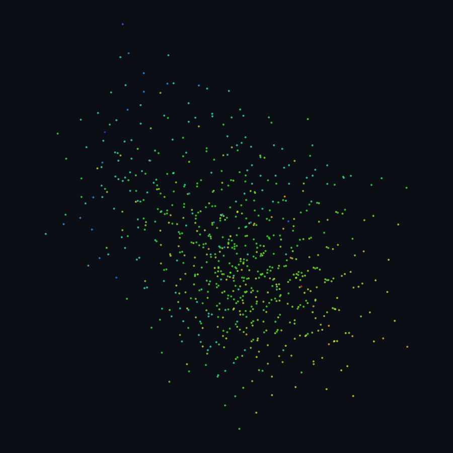
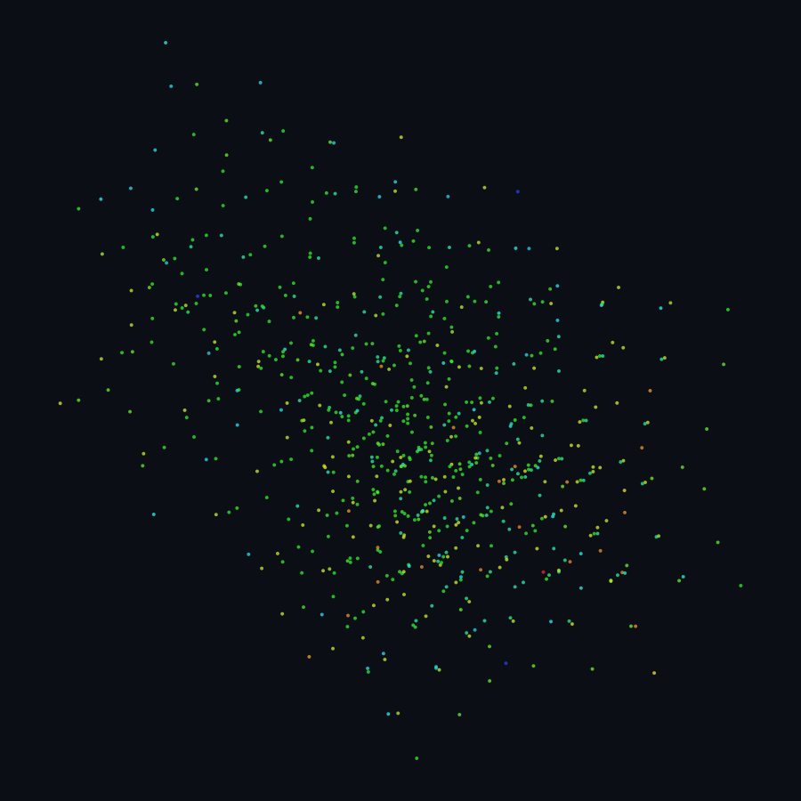
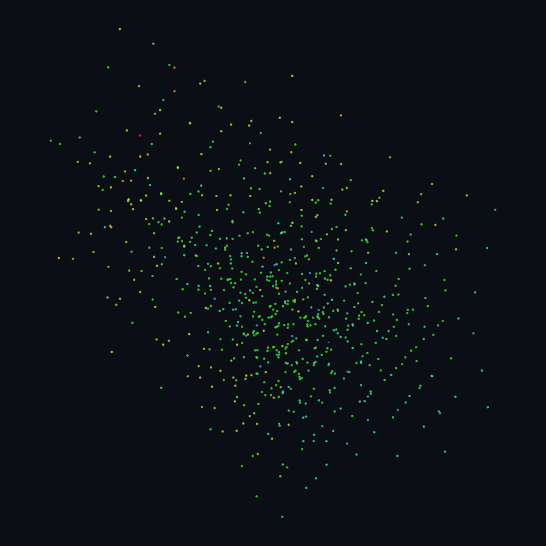
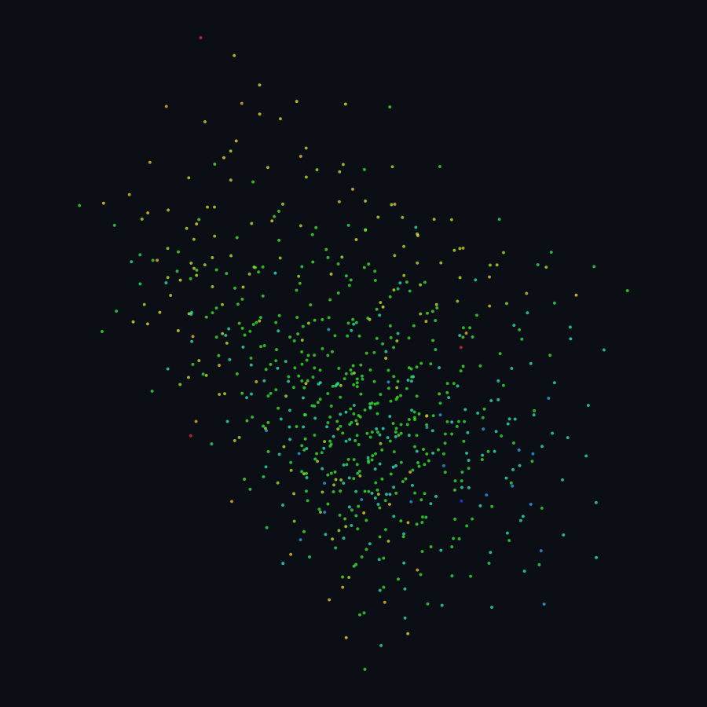
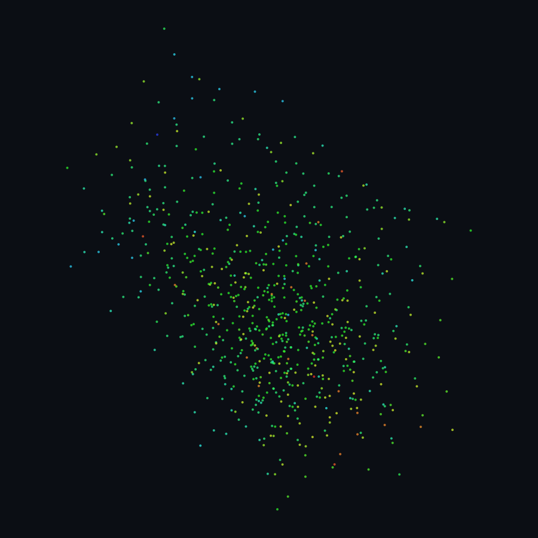

Branch 0

- points
- 729
- dim
- R^8
- grid
- 3
- seed
- 6
- sha256
08c6931a07667cb1…
«Tecnósfera al servicio de la Biósfera.» — «La Paz Es El Camino.»
Five local affine-chart sheets of the quintic Calabi-Yau threefold, rendered with the same seed and camera.
The affine chart is z0^5 + z1^5 + z2^5 + z3^5 + 1 = 0, with z3 = (-1 - z0^5 - z1^5 - z2^5)^(1/5). Branches 0 to 4 are different choices of the complex fifth root. They are local sheets, not the global quintic threefold. No metric or Ricci-flatness is computed here.

08c6931a07667cb1…
dbbafbdf3711e89e…
6ef86b7387cfa929…
383ec40702762562…
669bc7c0425c618c…
EN: Web previews use grid=3 for lightweight rendering. Full reproducible SVG/JSON outputs use grid=4 and are stored under examples/. Run make quintic-gallery-previews to regenerate web previews and make quintic-gallery to regenerate full outputs.
ES: Las vistas previas web usan grid=3 para render ligero. Las salidas SVG/JSON reproducibles completas usan grid=4 y se guardan en examples/. Ejecuta make quintic-gallery-previews para regenerar vistas web y make quintic-gallery para regenerar salidas completas.